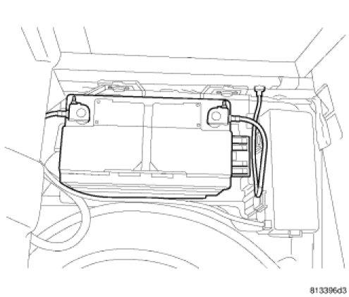
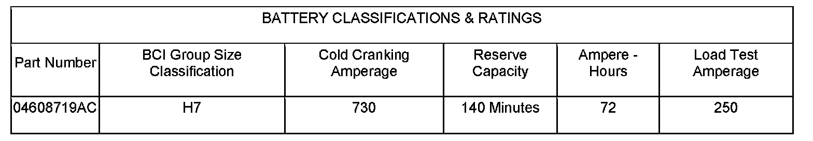
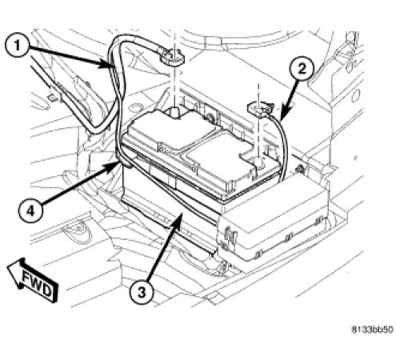
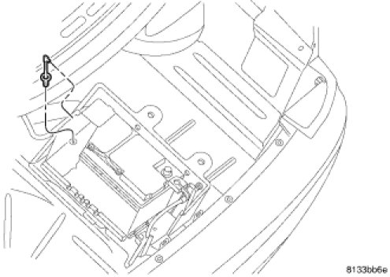
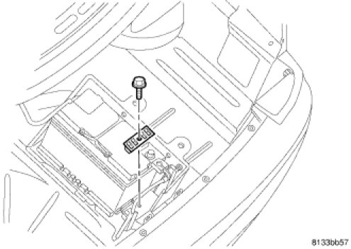
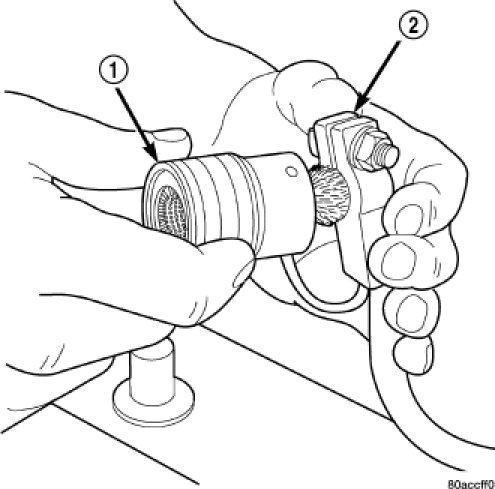
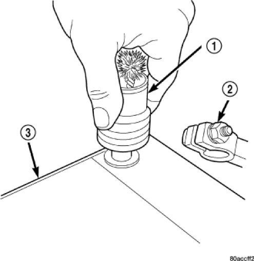
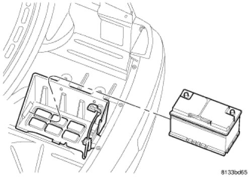

This guide is written from the 3.5L V6 (VIN G) book. The 8th character of the VIN should be G. The removal steps read the same for the other 300 engines, but the battery spec below is only confirmed for the 3.5L.
The 300 has a single 12-volt battery in the rear floor area, next to the spare tire, under the trunk floor trim panel. The posts under the hood are remote jumper terminals, not the battery.

Wear heavy-duty rubber gloves and safety glasses. Take off metal jewelry so battery current can't arc through it.
Explosive hydrogen gas forms around the battery: no smoking, flames or sparks. The acid is poisonous and caustic; if it gets on skin or in eyes, flush with water and call a physician.
Book time is 0.3 h to replace the battery, not counting testing or charging. Tap a step to check it off. Progress is saved in this browser only.
A replacement must match the group size and equal or beat these ratings.
| Rating | Original battery |
|---|---|
| Mopar part number | 04608719AC |
| BCI group size | H7 |
| Cold cranking amps at −18°C / 0°F | 730 A |
| Reserve capacity at 25 A | 140 min |
| Ampere-hours | 72 Ah |
| Load test | 250 A |

Check the new battery reads 12.65 V or more across the posts. The manual counts that as fully charged.
If it's lower, charge it off the car before fitting it. Don't go above 16 V, and never above 20 A on a battery at −1°C (30°F) or colder.
A battery that shows signs of freezing, leaking or loose posts must not be tested, boosted or charged. It can arc internally and explode.
Negative cable off first, every time.
Turn the ignition OFF and switch off every accessory.
Open the trunk and remove the rear compartment floor trim panel to get at the battery.
Disconnect the negative cable (2) from the battery terminal and move it clear of the post.

Disconnect the positive cable (1) from the battery terminal.
Unlatch the battery retention strap (4).
Gently pull the vent tube off the nipple on the battery.
The vent tube nipple is plastic and breaks easily. Ease the tube off; don't lever it.

Remove the holddown clamp bolt and clamp, then lift the battery out of the tray.

Clean with baking soda in warm water and a stiff brush.
Clean all corrosion off both cable terminal clamps (2) with a wire brush or terminal cleaner (1) and baking-soda solution.

Clean the battery tray and holddown hardware the same way.
Check the cable terminals. Replace any cable whose terminal is damaged or deformed.
Check the tray and holddown for damage and replace anything that is.
If the new battery's posts show any film or corrosion, clean them with the post brush (1) too. Keep the solution out of the cell vents.

Positive cable on first, negative last.
Set the battery in the tray.

Fit the holddown clamp and bolt. Torque to 4 Nm (35 in-lb).
Gently push the vent tube onto the battery nipple.
Latch the battery retention strap (4).
Connect the positive cable (1) and tighten the clamp nut.
Connect the negative cable (2) and tighten the clamp nut.
Refit the rear compartment floor trim panel.
The 3.5L book gives no torque for the battery terminal clamp nuts. Tighten until the clamp can't be twisted on the post by hand, without crushing the clamp.
The manual calls for these any time the battery has been disconnected.
Turn the ignition to RUN.
Driver window: run it fully up and hold the switch until the motor has stalled for at least 2 s.
Run it fully down and hold for 2 s at the stall.
Run it fully up again and hold for 2 s at the stall.
Repeat the up, down, up sequence on the passenger front window.
Check that express up and down work on both windows. If calibration fails twice, check the driver and passenger door modules for trouble codes.
The steering angle sensor in the ABS module must be recalibrated after the battery has been disconnected. If it isn't, the ESP/BAS lamp flashes continuously with no trouble codes stored.
Point the front wheels straight ahead and center the steering wheel.
Connect the scan tool and follow its steering angle sensor calibration steps.
Everything in this guide in one place.
| Item | Spec |
|---|---|
| Battery holddown clamp bolt | 4 Nm (35 in-lb) |
| Battery terminal clamp nuts not listed in the manual | — |
| Battery BCI group size | H7 |
| Cold cranking amps, min | 730 A |
| Reserve capacity, min | 140 min |
| Fully charged open-circuit voltage | ≥ 12.65 V |
| Charging voltage, max | 16 V |
| Charge rate, max battery at −1°C / 30°F or colder | 20 A |
Source: LEMON manual for the 2007 Chrysler 300 V6-3.5L VIN G, Repair and Diagnosis: Starting and Charging, Battery (Description, Specifications, Removal, Installation, Battery Reconnection, Battery Cleaning and Inspection, Inspection, Battery Charging, Testing and Inspection), and Parts and Labor: Battery Labor Times. Figures are the manual's own scans; tap one to open it full size.